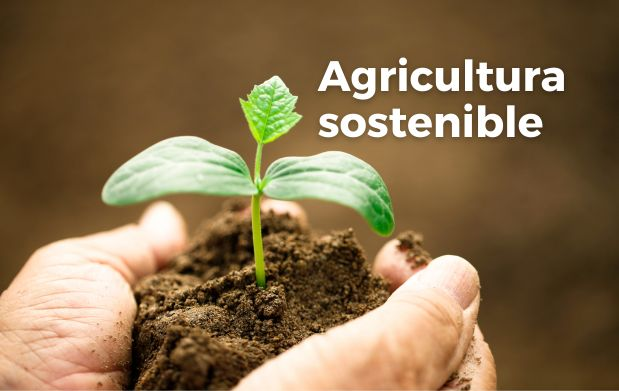

¿Qué es la Agricultura Sostenible?
La agricultura sostenible es un enfoque de la agricultura que se centra en la producción de alimentos y la gestión de los recursos naturales de manera sostenible. La agricultura sostenible es un enfoque de la agricultura que se centra en la producción de alimentos y la gestión de los recursos naturales de manera sostenible. Este enfoque tiene en cuenta los impactos ambientales, sociales y económicos de la agricultura, y busca equilibrar la producción de alimentos con la protección del medio ambiente y la promoción del bienestar humano.
Objetivo principal
Es asegurar la viabilidad a largo plazo de la producción y la
salud del ecosistema. Esto implica la adopción de prácticas agrícolas
que no solo mantengan, sino que mejoren el suelo, el uso del agua y otros
recursos naturales, beneficiando tanto a la generación actual como a las futuras.
El término "sostenible" abarca una amplia gama de prácticas, y la definición
de lo que es sostenible puede variar según el contexto.
Sin embargo, hay varios tipos de agricultura que se destacan por su enfoque
específico en la sostenibilidad y que han ganado popularidad alrededor del mundo
en los últimos años.
Agricultura sostenible en el futuro
En nuestro país, la agricultura sostenible y la agricultura sustentable
son dos perspectivas complementarias que trabajan en armonía para lograr
un futuro agrícola más ecológico.
Ambas son vitales para enfrentar los desafíos ambientales y garantizar la
seguridad alimentaria a largo plazo en México. Así, ante los retos de un
sector primario que demanda inclusión, día con día nos enfocamos en generar
políticas, programas y acciones estratégicas que busquen preservar la vida y
generar condiciones de desarrollo para la agricultura, la ganadería y la pesca,
así como transitar hacia la autosuficiencia alimentaria del país.